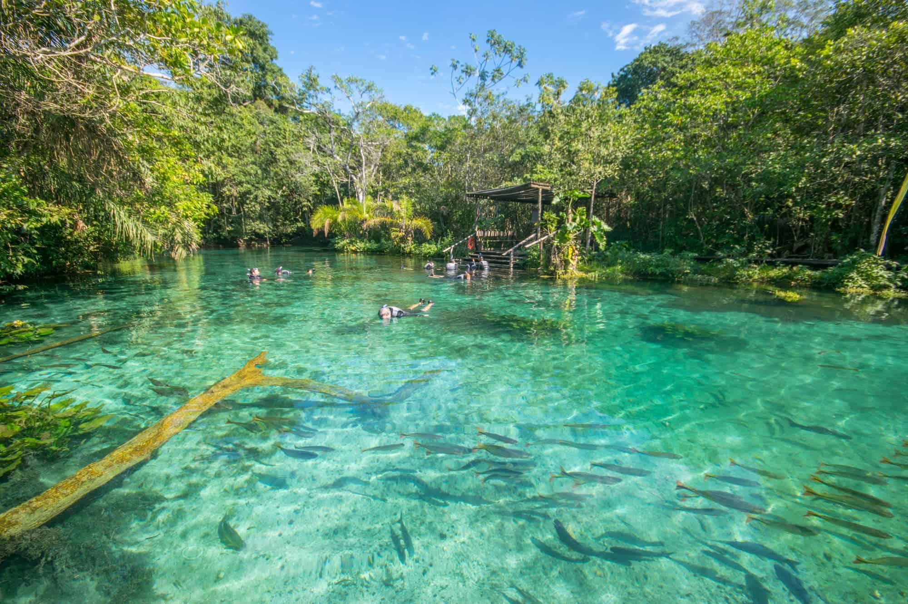
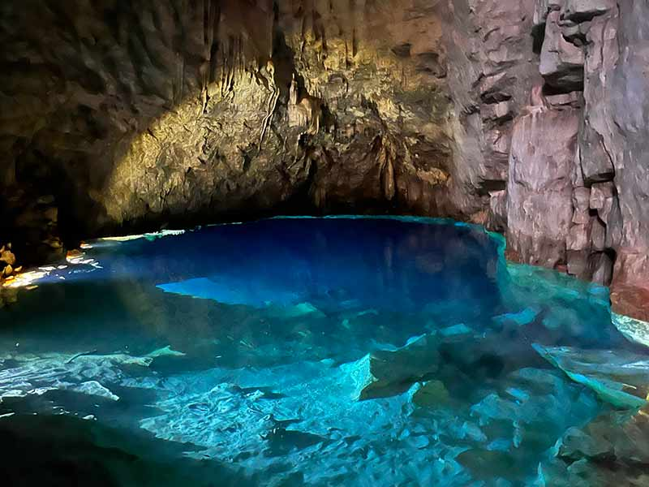
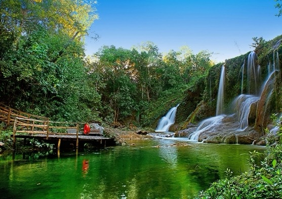

Pacote de Viagem para Bonito - MS
Conheça as belezas de Bonito



Bonito, no Mato Grosso do Sul, é famoso por seus rios de águas cristalinas, cachoeiras e ecossistema preservado. Um paraíso do ecoturismo brasileiro!
Roteiro do Tour
- Chegada, check-in e passeio pelo centro
- Passeio de flutuação no Rio Sucuri (opcional)
- Visita à Gruta do Lago Azul (opcional)
- No dia seguinte, café da manhã e retorno
O que está incluso
- Transporte ida e volta em ônibus executivo
- 1 noite de hospedagem com café da manhã
- Guias turísticos credenciados
- Seguro viagem
Regras e informações importantes
Crianças
Crianças de até 5 anos viajando no colo não pagam. A partir de 6 anos, pagam o valor normal pois é obrigatório ocupar um assento.
É obrigatório apresentar documento da criança no embarque
Embarque
Nossos embarques ocorrem em Itaquera, Barra Funda, e Santo Amaro.
Pagamento
Aceitamos pagamento via PIX, transferência bancária, cartão de débito e crédito em até 12x com juros.
Guia ou monitor de viagem
Durante toda a viagem, nosso grupo será acompanhado por um guia turístico profissional dedicado, que ficará disponível 24 horas para assegurar que o roteiro transcorra com perfeição e que todos os viajantes tenham uma experiência memorável.
Nossa equipe de monitores é composta por especialistas em turismo receptivo, capacitados não apenas para orientar os passeios, mas também para transformar cada momento em diversão garantida.
Incluso
Transporte ida e volta
Guia/Monitor
1 dia de estadia
Não incluso
Bebidas
Alimentação
Passeios de flutuação e gruta (cobrados à parte)
Ônibus
Manter o ambiente limpo e organizado.
Respeitar os horários estabelecidos pelo guia.
É proibido consumir bebidas alcoólicas no veículo.
Uso de cinto de segurança obrigatório.
Selecione as datas disponíveis
Local de Embarque*
Selecione seu local de embarque e previsão de horário:
Passeios opcionais*
Selecione se incluirá passeios extras:
Valores
Bonito - MS | Bate e Volta
R$ 299,00
Aceitamos pagamento via PIX, transferência bancária, cartão de débito e crédito em até 12x com juros.
Faça sua reserva!
Vagas limitadas! Garanta já sua experiência inesquecível em Bonito.